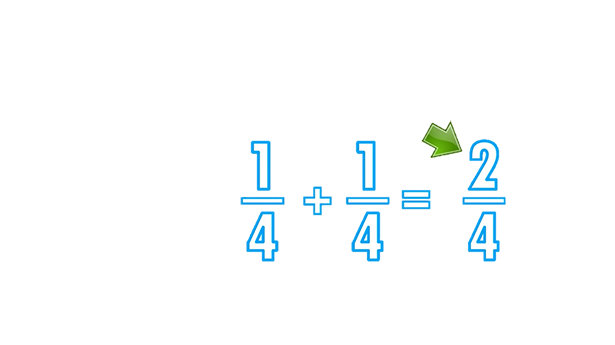

Nivel Basico
Introducción a las fracciones
La fracción se utiliza para representar las partes que se toman de un objeto que ha sido dividido en partes iguales.
Por ejemplo, dividimos una pizza en 8 partes iguales y cogemos tres. Esto se representa por la siguiente fracción:
Una fracción está formada por dos números:
¿Cómo se leen las fracciones? Se leen en función de cuál es su denominador, ósea del número de abajo:
1 / 2: un medio
1 / 3: un tercio
1 / 4: un cuarto
1 / 5: un quinto
1 / 6: un sexto
1 / 7: un septimo
1 / 8: un octavo
1 / 9: un noveno
1 / 10: un decimo
1 / 11: un onceavo
1 / 12: un doceavo
1 / 13: un treceavo
SUMA DE FRACCIONES CON MISMO DENOMINADOR
RECORDEMOS QUE:.
Para sumar fracciones que tengan el mismo denominador, solo se deben sumar los numeradores y se deja el mismo denominador.
Se determina que dos fracciones son equivalentes al multiplicar el numerador y el denominador de una fracción por el mismo número.

RESTA DE FRACCIONES CON MISMO DENOMINADOR
Para la resta de fracciones es lo mismo. Se tiene el mismo denominador, ahora lo único que
debemos hacer es restar los dos numero de arriba de la fracción.
Por ejemplo:
Tenemos ¾ - ¼. Podemos ver que el 4 es el mismo en ambas fracciones. Solo queda restar 3- 1
¡MUY BIEN HECHO!